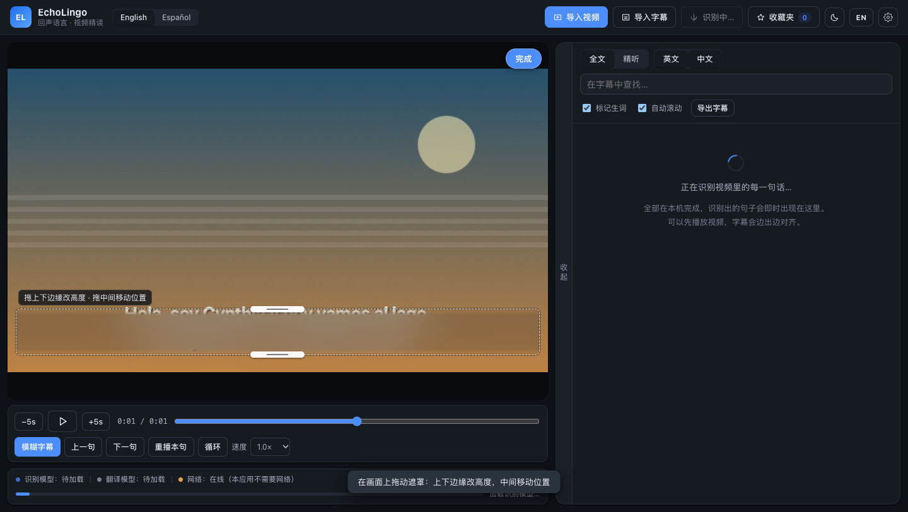

识别与翻译 100% 在本机完成 · 断网可用
看英语或西语视频，逐句听懂，而不是逐字读
导入一段视频，自动得到原文与中文对照；播放到哪一句，右侧就停在哪一句。 点任意单词看释义与发音，画面里烧录的字幕可以就地模糊掉。 识别与翻译都在本机完成，视频不出你的电脑。
首次打开需下载识别与翻译模型（约 200 MB，只此一次），之后由浏览器缓存，断网也能继续用。
¥9.9 一次性买断 · 永久使用，一个激活码换电脑也能用 领取激活码


三步，都在同一个界面里
没有弹窗接力，也没有「导出再导入」。下面是同一份界面的实际截图。
01 · 导入与识别
拖进来，字幕自己长出来
支持 mp4 / mov / mkv / webm，也支持 mp3 / m4a / wav。识别过程显示真实阶段与进度，随时可以取消；失败会明确告诉你哪一步失败，并能就地重试。
- 原文最强、译文次级，第三语言可折叠
- 可以只导入 srt / vtt，跳过识别

02 · 逐词
点一个词，先听发音，再看释义
词卡显示音标、词典义项与它所在的那一句。没有可靠的上下文义项时不会编造，只标注「当前句」并把已有译文原样放在旁边。
- 可选「查词时自动暂停」，关闭后只在原本播放时续播
- 收藏进入生词本，交给间隔复习

03 · 练听力
把「看得懂」换成「听得清」
遮住画面里烧录的字幕，右侧也能逐列收起。播放条只留播放、上一句 / 下一句、重播、循环和速度；遮罩样式与强度收进设置，不占播放空间。
- 按住 Alt 临时揭开原文
- 键盘：空格、← →、R、L、E、C、H
它是什么，不是什么
边界说清楚，比一句「全离线」更有用。
本机识别与翻译
Whisper 与 opus-mt 的量化模型跑在浏览器 WebAssembly 里。首次需联网下载模型，之后断网可用；视频从不离开本机。
能接着上次看
最近的文件名、已生成字幕与播放位置存在本机浏览器。网页无法记住本机文件路径，重开时需你再选一次同一个文件，字幕与位置不会丢。
辅助，不是标准答案
句子级翻译对长句和俚语会有偏差；词义来自离线 ECDICT。精读时请以原文为准，有现成字幕时导入 srt / vtt 最准。
快捷键
练听力时手不用离开键盘。
| Space | 播放 / 暂停 |
| ← → | 上一句 / 下一句 |
| R | 重播本句 |
| L | 循环本句 |
| S | 朗读本句 |
| D | 收藏本句 |
| E / C | 显示 / 隐藏右侧原文 / 中文 |
| H | 收起 / 展开右侧字幕面板 |
| Alt | 临时显示被模糊的画面字幕原文 |
| Esc | 关闭浮层 / 词卡 |
也可以装成 macOS 应用
自包含的 .app，模型内置，双击即用；不想装也能直接用网页版。
# 需要 node，以及 macOS 自带的 ditto / plutil / codesign git clone https://github.com/KJHAJKSLFHA/echolingo cd echolingo/desktop node build.mjs # → ../dist/EchoLingo.app open ../dist/EchoLingo.app
- 打包脚本零依赖：自己下 Electron 的 zip、用
ditto解压、手工组装 bundle、codesignad-hoc 重签。 - 首次构建会下载 Electron，之后重建是秒级。
- Apple Silicon 上 ad-hoc 重签不能省 —— 签名无效的 arm64 应用会被系统拒绝启动。
- 没有 Apple 开发者签名，首次打开若被拦：右键 →「打开」，或
xattr -dr com.apple.quarantine /Applications/EchoLingo.app。